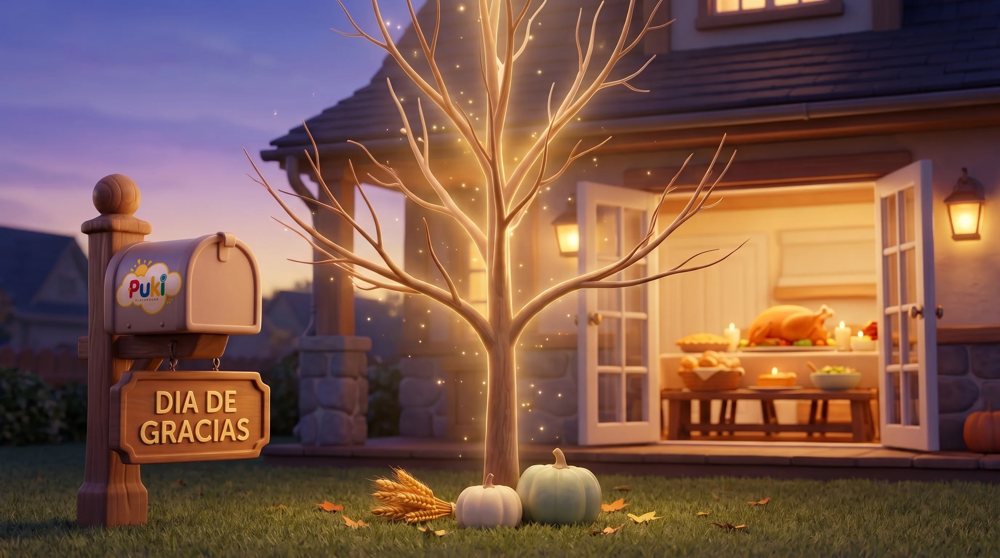

Agradecer
Las personas que nos cuidan
Familia

Thanksgiving Day
El Día de Gracias es una celebración muy especial dedicada a detenernos un momento, mirar todo lo bueno que tenemos en nuestra vida y decir «gracias» de corazón.
Su origen nació como una fiesta de la cosecha, cuando las familias y vecinos se reunían alrededor de la mesa para agradecer por los alimentos recogidos y compartir lo que tenían con quienes los rodeaban.
Hoy lo celebramos recordando tres gestos que llenan de luz nuestro salón y nuestro hogar:
Cada vez que pulsas uno de los botones mágicos del jardín, una nueva hoja nace en nuestro árbol para recordarnos que la gratitud crece cuando la compartimos.
Se quitarán todas las hojas del árbol para que otro grupo de alumnos pueda jugar.